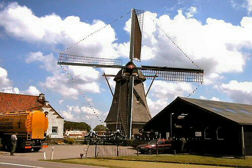

"De Korpershoek"

|  | Ten westen van het dorp Schipluiden staat al sinds eeuwen een korenmolen, want al in 1541 wordt melding gemaakt van een korenmolen op deze plaats. De molen dankt zijn naam aan de karpers die op deze plek paaien en kuit schieten. De plaats waar de molen staat was dermate klein, dat de molenaar in 1622 aan het Hoogheemraadschap van Delfland toestemming vraagt om de werf te mogen vergroten. Hierna word in 1625 een nieuwe molen gebouwd. De molen draaide tot juli 1865, want op de 21ste van deze maand werd hij door de bliksem getroffen en verbrandde geheel. De molen werd mogelijk herbouwd met gebruikmaking van een Berkelse poldermolen en deze herbouwde molen onderging het zelfde lot als zijn voorganger : op 2 februari 1945 is ook deze molen in brand geraakt. Omdat men de molen terug wilde, werd er al in maart 1945 een comité opgericht om tot herbouw te komen. Na enig zoeken kwam men in Leimuiden terecht bij korenmolen "De Jonge Pieter" uit 1772 die buiten bedrijf was en al enigszins tekenen van verval begon te vertonen. Omdat het comité geen rechtsgeldende bevoegdheden had werd dit omgevormd tot een stichting. Daarna kon molenmaker van der Loo uit Kethel (Schiedam) een begin maken met de sloop van de Leimuidense molen. De onderdelen werden per schip naar Schipluiden vervoerd en zo vond op 13 mei 1950 de eerste steenlegging plaats. |
| Op zaterdag 10 november 1951, werd de herbouw afgesloten met een feestelijke opening, waarbij de molen weer in gebruik kon worden gesteld door Mr. R. Hotke, waarnemend hoofd van de afdeling Oudheidkunde en Natuurbescherming van het Ministerie van onderwijs, Kunst en Wetenschappen. Molenaar de Willigen, later opgevolgd door van Leeuwen, maalde hoofdzakelijk veevoeder. Eind jaren tachtig bleek dat de molen een restauratie nodig had, ondanks dat er toch voldoende onderhoudswerk aan gepleegd werd. Zo werden de roeden en het staartwerk slecht, het halslager en de stopping werd steeds verder naar buiten gedrukt en besloten werd om de molen half 1990 stil te zetten. In januari 1991 ging een grote restauratie van start, molenmaker Verbij uit Hoogmade vernieuwde de roeden, staartwerk en de windpeluw. Door van Leeuwen werd op 31 mei 1991 een feestelijke opening georganiseerd, waarbij de molen door burgemeester drs. Waayer weer in gebruik werd gesteld. Daags daarna werd een open dag gehouden voor de Schipluidense bevolking, waar grote belangstelling voor was. De molen is een pronkstuk voor het dorp Schipluiden en het is te hopen dat de molen tot in lengte van jaren malende/draaiende te zien zal zijn. |
Technische gegevens
| naam adres bouwjaar type functie eigenaar molenaar Openingstijden |
"De Korpershoek" Gaagweg 1 2636 AG Schipluiden 1950 grondzeiler korenmolen G. van Leeuwen G. van Leeuwen (tel 015-3809128) Op afspraak |
Constructie
| voet romp kap wiekenkruis vlucht wiekvorm bovenas kruiwerk vang inrichting |
veldmuren van vier meter hoog houten achtkant gedekt met riet gedekt met riet gelaste stalen roeden, Fabr. Derckx, Beegden binnenroede: nr. 592 buitenroede nr: 591 (beide uit 1990) 26,25 m. Oudhollands gietijzer, gegevens gedeeltelijk onder de vulstukken, De Pr......, ij......187 42 nylon rollen : kruirad losse Vlaamse blokvang uit vijf stukken : wipstok een koppel der 17der kunstmaalstenen ; twee regulateurs op elektrische kracht een elevator, twee mengketels en een hamermolen |
Overbrengingen
| aantal kammen bovenwiel aantal staven bovenschijfloop aantal kammen spoorwiel aantal staven steenschijfloop overbrengingsverhouding |
60 27, steek 12,0 cm. 85 27, steek 9,0 cm 1 : 7,00 |
Versieringen
|
fraaie baard groen geschilderd met gele rand en met opschrift :
1772-1950 KORPERSHOEK aan de noordzijde een steen met opschrift : 1772-1950 brand velde de oude molen neer maar vrolijk draait de nieuwe weer eerst zo werkeloos in Leimuiden maal ik nu voor Schipluiden de eerste steen gelegd op 13 mei 1950 comité herbouw molen "KORPERSHOEK" dr. F. H. Reynders voorz. J.P. Westerman secr. |
 Deze pagina is gemaakt op 18-12-2006: Tijd: 23:33 uur.
Deze pagina is gemaakt op 18-12-2006: Tijd: 23:33 uur.

Laatste wijziging: 17-5-2007: Tijd 22:21 uur. Tel no.